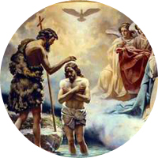
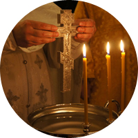
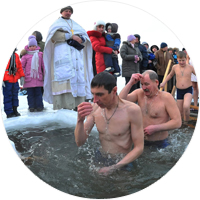

Туры по Уралу
Для тех, кто любит и умеет отдыхать.
Russian name generator
Ivan?


 Горы
Горы Музеи
МузеиРусские традиции

Россия – страна, народ которой наряду с высокоразвитой современной культурой бережно хранит
и чтит свои традиции, глубоко уходящие корнями не только в православие, но и даже в язычество. Благодаря христианству
в России появились такие замечательные праздники, как Пасха, Рождество и Крещение Господне. Язычество же подарило
русским Масленицу.
Каждый из перечисленных праздников имеет свои особенности и проводится согласно определенным традициям, отточенным веками.
РОЖДЕСТВО
Православная церковь отмечает Рождество Христово 7 января, в отличие от западных церквей,
которые празднуют его 25 декабря по григорианскому календарю.
В ночь перед Рождеством в церквях идет праздничная служба. Рождество – праздник,
когда вся семья собирается за общим столом. Сочельником заканчивается Рождественский пост, поэтому в сам
праздник Рождества верующие угощаются вкусными яствами. К рождественскому праздничному столу хозяйки сегодня
подают самые разные угощения.
Как и в старинные времена, в Рождество в России принято гадать. Гадают с самого Рождества вплоть до
Крещения, прежде всего, на жениха или на судьбу.
Рождественские гадания пользуются особенной популярностью у незамужних девушек.


КРЕЩЕНИЕ ГОСПОДНЕ
Крещение празднуется Православной Церковью 19 января.
Данный праздник установлен в память Крещения Господа Иисуса Христа в реке Иордан, когда ему было 30 лет.
Освящение воды – главная традиция праздника Крещения. Вода освящается в источниках, а там,
где нет такой возможности – во дворе храма. Освящая воду, священник опускает крест в специальную крещенскую прорубь,
называемую «иорданью». Считается, что крещенская вода обладает чудодейственной силой и целебными свойствами, как и
воды Иордана, в которые входил Иисус Христос. В день Крещения традиционно многие люди совершают купание в проруби.
Святая вода считается лучшим лекарством от всех недугов.
Хранить же ее надо в подобающем месте целый год. Верующие люди принимают крещенскую
воду с молитвой по утрам, перед принятием какой-либо пищи.



ПАСХА
Пасха – светлый праздник воскресения Христа, самый важный праздник в христианском календаре.
Пасху отмечают в первое воскресенье после первого весеннего полнолуния – между 4 апреля и 8 мая. Празднику предшествует
Великий Пост, поэтому в день Пасхи на стол выставляются самые разные и вкусные блюда. Не обходится, конечно же, и без
ритуальных кушаний. Накануне люди пекут традиционную празднечную выпечку – куличи, делают творожные пасхи и красят яйца.
Вечером во всех храмах проходят всенощные бдения и крестный ход вокруг церкви. Верующие несут с собой в церковь разнообразные
кушанья, чтобы священник окропил святой водой и благословил приготовленную снедь. После освящения люди разговляются куличами,
пасхой и другими кушаньями. На следующий день верующие отправляются по домам с угощениями, даря своим родным, близким и
знакомым крашеные яйца
и приговаривая «Христос воскрес!» – «Воистину воскрес!». Праздник христианской Пасхи продолжается семь дней и
называется Светлой седмицей


МАСЛЕНИЦА
В старину Масленица была праздником поминовения усопших. Однако
со временем русский народ, любящий веселье и гуляния, превратил грустный праздник в разудалую Масленицу.
В настоящее время празнование Масленицы – веселые проводы зимы,
которые проходят в течение недели перед Великим Постом.
Одно из главных угощений на Масленице – блины,
которые поедаются в огромных количествах. Для каждого дня масленичной
недели характерны свои определенные обряды. Понедельник – это встреча Масленицы.
В этот день начинают печь блины, а также мастерят чучело Зимы из соломы или старых тряпок.
Чучело насаживают на шест и возят по округе, распевая песни. Вторник – это заигрыши. В этот день
будущие женихи и невесты ходят в гости друг к другу. В среду тещи приглашают своих зятьев на блины.
В четверг происходят веселые катания на санях и тройках, устраиваются кулачные бои. В пятницу зятья
зовут тещу в гости, а суббота – время золовкиных посиделок. Последний день гуляний – Прощёное воскресенье.
В этот день принято просить друг у друга прощения, даже если ты ни перед кем не виноват. Также существует традиция
сжигать чучело Зимы под песни и веселые крики. Масленица – необычайно интересный праздник, который во всей красе показывает
самобытную русскую культуру.


Туры
 Лесные озера
Лесные озера Горнолыжные туры
Горнолыжные туры Пешие туры
Пешие туры Охота
Охота Рыбалка
Рыбалка Рафтинг
Рафтинг Экскурсионные туры
Экскурсионные туры Праздничные туры
Праздничные туры Отдых с детьми
Отдых с детьми Лечение на Урале
Лечение на Урале SPA-туры
SPA-туры Бизнес-туры
Бизнес-туры Комбинированные туры
Комбинированные туры Индивидуальные туры
Индивидуальные турыОтзывы
Последний отзыв:
«Спасибо Вам!!! Мы великолепно отдохнули!
Ваши консультанты змечательные, умные, подбирают туры индивидуально...»
Иван Иванов, г. Москва
Подписка на рассылку
Дизайн и разработка сайта: